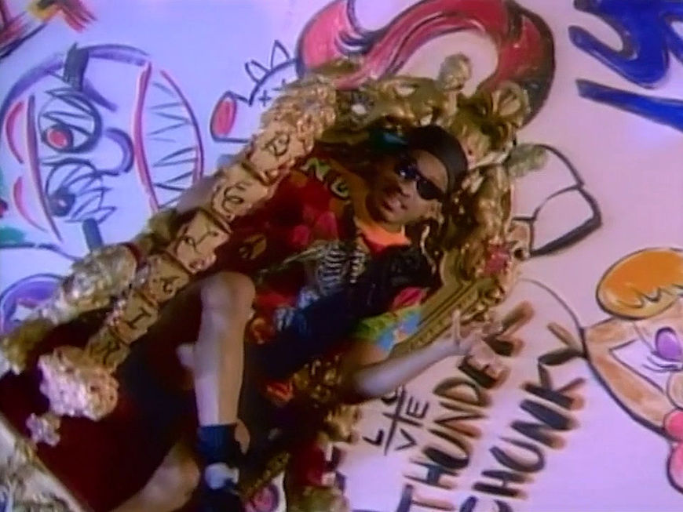
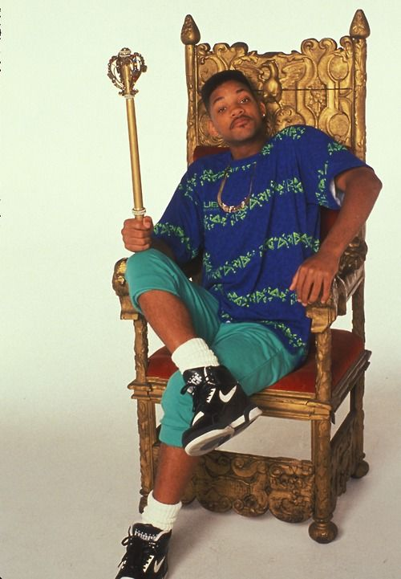

all about how, My life got flipped, turned upside down, And I'd like to take a minute, just sit right there, I'll tell you how I became the prince of a town called Bel Air.
On the playground is where I spent most of my days. Chillin' out, maxin', relaxin all cool, And all shootin' some b-ball outside of the school. When a couple of guys who were up to no good, Started makin' trouble in my neighborhood. I got in one little fight and my mom got scared, And said "You're movin' with your auntie and uncle in bel Air." I whistled for a cab, and when it came near, The license plate said "fresh" and it had dice in the mirror. If anything I could say that this cab was rare, But I thought "Nah forget it, Yo home to Bel Air." I pulled up to the house about seven or eight, and I yelled to the cabby "Yo homes, smell ya later." Looked at my kingdom, I was finally there, To sit on my throne as the Prince of Bel Air.
